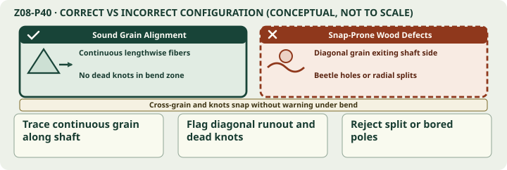

Z08-P40 · Rocks, minerals and materials · New manuscript
Knots, Grain Runout and Timber Failure Recognition
Identify weak grain runout, dead knots, and insect damage in poles and handles before applying bending force.
When it applies · Inspecting walking staves, tarp poles, and wooden tool handles.
Equipment · Visual side-by-side grain check in good light.

Actions
- Trace wood grain lines along the entire length of a shaft or pole; grain exiting the side diagonally (runout) snaps suddenly under bending.[R15, K09]
- Check for loose dark dead knots, spiral twist, beetle exit holes, and longitudinal splits that concentrate bending stress.[R15]
- Never extrapolate a clear visual grain check into an engineered load rating for shelter ridges or elevated supports.[R15, E07]
Failure recognition · Trusting a knotted or cross-grained pole for a shelter ridge or axe handle causes sudden splintering failure under load.[R15, K09]
Verify · Inspected wooden poles and handles show continuous lengthwise grain with zero deep knots or splits at load points.[R15, K09]
Stop or change course · Stop using any wooden pole or handle with diagonal grain runout, cracking sounds, or loosened dead knots.[R15, K09]
Evidence and editorial notes
- E07 · NWS · Lightning Tips (current web edition)
- Section: If you hear thunder; when it is safe to return · Conditions: Thunderstorm and reachable substantial building or enclosed hard-topped vehicle
Support: Move to proper shelter at thunder. Wait 30 minutes after last thunder before resuming outdoor activity.
Limitations: Fabric tents, open pavilions, and trees are not lightning-safe shelters. · Conflicting evidence: None; 30-minute rule is standard NWS guidance.
Editorial note: Separates weather cover from lightning protection in Z02. · Specialist reviewer: Weather safety and emergency management
Primary source · checked 2026-11-24 - K09 · USDA Forest Service · Handtools for Trail Work (0523-2810-MTDC) (agency handbook)
- Section: Cordage, Anchors and Rigging Boundaries · Conditions: Non-life-safety camp lashing, tarps, haul lines and tie-downs
Support: Cordage strength drops significantly at knots, sharp bends, wet fibers, UV exposure and abrasion; inspect fibers before loading and never use unrated camp cord or improvised bindings for life-safety suspension or climbing.
Limitations: No universal breaking strength applies to natural plant fibers or weathered salvaged rope. · Conflicting evidence: Counters folklore claims equating improvised cordage to rated climbing rope.
Editorial note: Separates camp utility lashing/hauling from life-safety rigging. · Specialist reviewer: Rigging safety and materials mechanics
Primary source · checked 2026-11-24
Current assessment · W2C-E004 (2026-11-25) · Open: cited section not found in the source; escalated: Replacement support identified in FM 3-97.61 paras 4-1 to 4-3 (pages 4-1 to 4-3): sharp edges cut nylon rope under tension; leaving rope knotted or tightly stretched reduces strength and life over time; ultraviolet light deteriorates nylon; inspect before and after each use; select rope by task, type, diameter and tensile strength. Limits: No support found for the wet-fiber strength-loss part of K09. FM context is mountaineering rope, not camp cord. - R15 · Minnesota DNR · Native Trees of Minnesota Identification Reference (Current web edition)
- Section: Regional wood species, grain, bark, and moisture variability · Conditions: Dead downed wood and natural bast fibers in Upper Midwest forests
Support: Wood density, grain straightness, resin content, and decay state vary widely by species, tree part, and moisture history.
Limitations: Visual grain inspection cannot certify structural load capacity; avoid cutting live trees where prohibited and reject punky or cracked wood. · Conflicting evidence: None noted.
Editorial note: Reconciles B007 wood notes with material limits. · Specialist reviewer: Forestry and wood-science specialist
Primary source · checked 2026-11-25
Source lineage · New manuscript (Z08 P16 wood failure) · Classification · New manuscript.